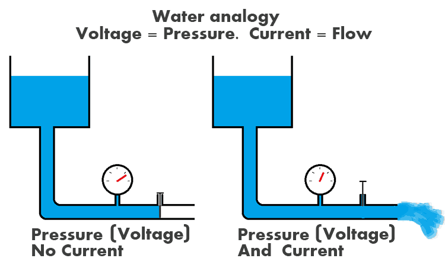
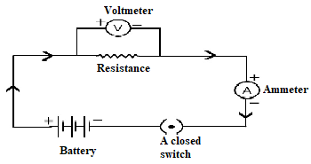
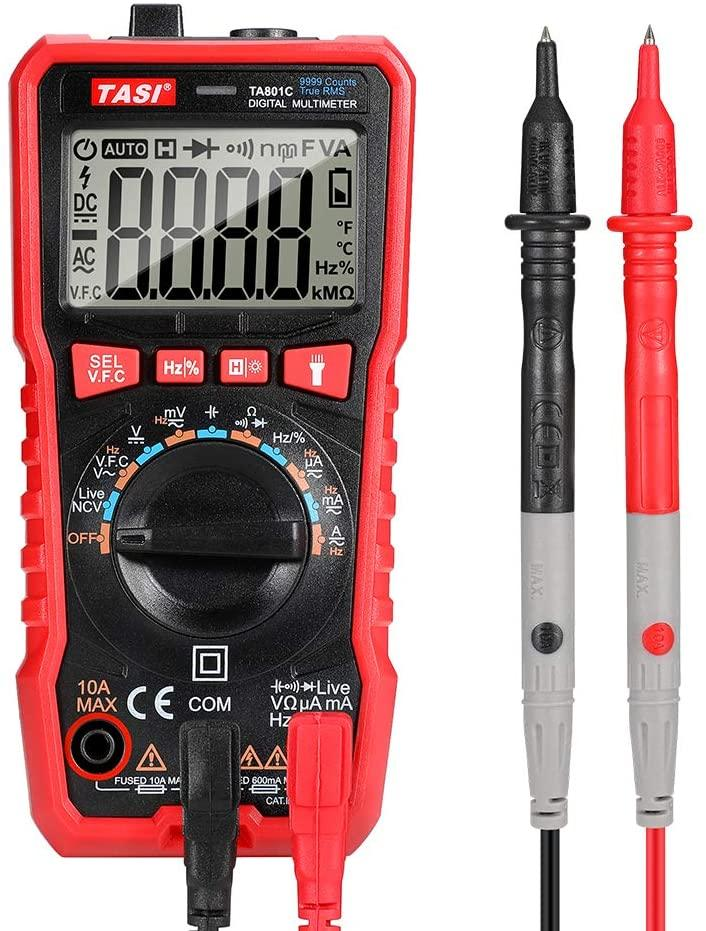

Definizione tensione elettrica
La tensione elettrica, o differenza di potenziale elettrico (ddp), è la grandezza fisica che rappresenta la quantità di energia necessaria per spostare una carica elettrica unitaria tra due punti di un circuito. In termini più semplici, è la "pressione" o la "spinta" che spinge gli elettroni a muoversi in un conduttore, generando così la corrente elettrica.
Punti chiave
- Differenza di Carica: La tensione è la differenza di carica (o potenziale) tra due punti. La sua presenza è necessaria per stabilire un flusso di elettroni (corrente).

- Energia per Carica: Rappresenta l'energia per unità di carica elettrica disponibile per compiere lavoro.
- Forza Elettromotrice (FEM): In un generatore (come una batteria), la tensione è spesso definita come forza elettromotrice (FEM), che è l'energia fornita per ogni Coulomb di carica per mantenere un flusso continuo.

- Unità di Misura: L'unità di misura nel Sistema Internazionale (SI) è il Volt (V).
- Misurazione: Viene misurata utilizzando un voltmetro, che determina la differenza di potenziale tra due punti del circuito.

In sintesi, mentre la corrente elettrica è il delle cariche, la tensione è la che genera tale flusso, fornendo l'energia necessaria al movimento.